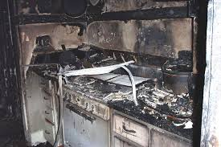

Instalación y Mantenimiento de Detectores de Humo
La seguridad en nuestro hogar es una prioridad que no debe ser subestimada. Instalar detectores de humo y asegurarse de que están en perfecto funcionamiento es esencial para prevenir desastres relacionados con incendios. Aquí te ofrecemos una guía detallada para la correcta instalación y mantenimiento de estos dispositivos, que son primeros en alertarnos en caso de emergencia.Selección del Detector de Humo Adecuado
Antes de proceder con la instalación, es crucial elegir el tipo correcto de detector de humo. Existen modelos de ionización, que son más rápidos para detectar llamas rápidas, y modelos fotoeléctricos, más efectivos ante incendios lentos y ardientes. También hay detectores combinados, que proporcionan una protección integral. Considera tu entorno y las recomendaciones de los expertos al seleccionar tu detector.Pasos para una Instalación Correcta
- Identificar la ubicación: Debe ser en el techo o en las paredes a no menos de 10 centímetros del techo y lejos de esquinas.
- Verificar la señalización: Asegúrese de que el dispositivo emita una señal sonora clara al instalarlo.
- Pruebas de funcionalidad: Hacer pruebas iniciales para confirmar que el detector está trabajando correctamente.

Mantenimiento Regular para Detectores de Humo
Una vez instalados, el mantenimiento regular es crucial para garantizar su funcionamiento óptimo. Esto incluye:- Revisión mensual: Realizar pruebas para verificar que la señal audible del detector de humo funcione como se espera.
- Limpieza periódica: Eliminar el polvo y las telarañas puede reducir la posibilidad de falsas alarmas y garantizar la detección efectiva de humo.
- Cambio de baterías: Como regla general, sustituir las baterías al menos una vez al año, o según lo indique el fabricante.
2. Uso y Revisión de Extintores
En la prevención y control de incendios, los extintores juegan un papel crucial al ser la primera línea de defensa ante un siniestro. Para garantizar su funcionamiento efectivo cuando más se necesitan, es esencial entender correctamente el uso y realizar una revisión periódica de estos dispositivos. En este segmento de nuestro artículo sobre 10 recomendaciones para prevenir un incendio, te proporcionaremos información detallada sobre cómo manejar adecuadamente un extintor y la importancia de su mantenimiento.Manejo Adecuado de un Extintor
El correcto manejo de un extintor de incendios es vital para sofocar las llamas de manera eficaz. La técnica P.A.S.O. (Pulsar, Apuntar, Sostener y Orillar) es un método ampliamente enseñado en la capacitación de seguridad contra incendios. Pulsar la manija o pin de seguridad para activar el extintor, apuntar la boquilla hacia la base del fuego, sostener con firmeza el extintor para controlar la descarga, y orillar lentamente hacia adelante para extinguir las llamas completamente, son los pasos a seguir que cada persona debe conocer y practicar. Recuerda que la efectividad radica en la calma y precisión con la que se realicen estas acciones.Revisión y Mantenimiento de Extintores
Una inspección rutinaria es indispensable para la operatividad de un extintor. Revisar la fecha de caducidad, el sello de seguridad intacto y la presión indicada en el manómetro, son aspectos esenciales que se deben supervisar mensualmente. Además, la normativa exige una revisión profesional anual, en la que se realicen pruebas más exhaustivas, como el retimbrado y recarga, asegurando que el extintor se mantenga en óptimas condiciones. De esta manera, no solo se preserva la seguridad de las instalaciones sino que también se asegura la confianza y la capacidad de respuesta rápida ante emergencias de fuego. Además de revisar y mantener su extintor, es importante considerar la ubicación de estos aparatos en su hogar o lugar de trabajo. Para garantizar su accesibilidad y eficacia, los extintores deben colocarse en zonas estratégicas y señalizadas, evitando obstrucciones y a una altura manejable. Asegurarse de que todos los ocupantes conozcan estos lugares y la forma de operar el equipo de seguridad es tan crucial como la propia revisión del extintor.3. Revisión de Instalaciones Eléctricas
Las instalaciones eléctricas son a menudo el talón de Aquiles en la seguridad de muchos hogares y empresas. Una revisión regular de estas puede ser la diferencia entre un entorno seguro y uno susceptible a desastres, incluyendo incendios. En este apartado, revisamos aspectos cruciales que debes tener en cuenta para proteger tu patrimonio y garantizar la seguridad de los habitantes.Identificación de Riesgos Eléctricos Comunes
Al iniciar una revisión, es vital identificar los puntos más propensos a generar complicaciones. Esto incluye la revisión de enchufes, switches, aparatos electrónicos y el panel de circuitos principal. La presencia de cableado viejo o en mal estado, así como la acumulación de dispositivos en una sola toma de corriente, puede significar un peligro inminente.Mantención y Renovación de Componentes
La mantención preventiva es un pilar en la prevención de incendios. La verificación del estado de fusibles, la solidez de las conexiones y la integridad del aislamiento de cables, debe ser parte de un cronograma de mantenimiento regular. Además, la renovación de componentes eléctricos que ya han cumplido su ciclo de vida útil no debe postergarse, considerando siempre adquirir componentes de alta calidad que cumplan con las normativas vigentes.Implementación de Buenas Prácticas
- Evita sobrecargar los enchufes y regletas de conexión.
- Desconecta los aparatos que no estén en uso.
- Invierte en detectores de humo y extintores de incendios ubicados estratégicamente.
- Considera la instalación de un interruptor de circuito por falla a tierra (GFCI) para prevenir cortocircuitos.
4. Almacenamiento Seguro de Materiales Inflamables
La gestión adecuada de materiales inflamables es crucial para la prevención de incendios en cualquier entorno. Ya sea en el ámbito doméstico, industrial o comercial, las prácticas seguras en el almacenamiento de sustancias inflamables pueden marcar una diferencia significativa en la mitigación de riesgos. En este artículo, exploraremos las recomendaciones clave para asegurar un ambiente más seguro y cómo estas acciones pueden contribuir a prevenir un incendio. La identificación correcta de estos materiales y la comprensión de sus propiedades es el primer paso para manejarlos de manera responsable. Luego, las normas establecidas por autoridades de seguridad, tales como la distancia entre productos, la ventilación adecuada, y el uso de contenedores apropiados, asegurarán que se minimicen las posibilidades de que una chispa inesperada se convierta en un desastre.Directrices para el Almacenamiento Correcto
- Uso de envases y contenedores certificados: Los recipientes destinados a guardar materiales inflamables deben cumplir con las normativas de seguridad para contener derrames y vapores dañinos.
- Mantener una buena ventilación: Los espacios dedicados al almacenamiento de estos materiales deberán contar con sistemas de ventilación que permitan dispersar vapores y evitar la acumulación de gases inflamables.
- Distancia segura entre productos: La segregación y separación adecuada entre distintos tipos de inflamables es esencial para prevenir reacciones químicas peligrosas.